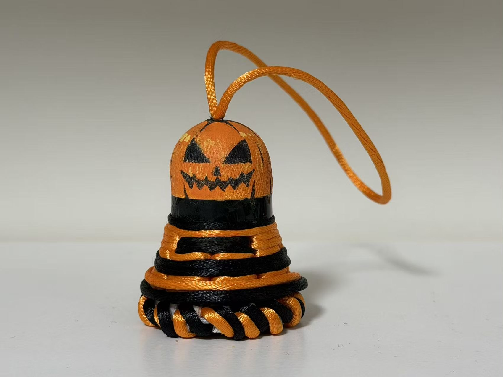
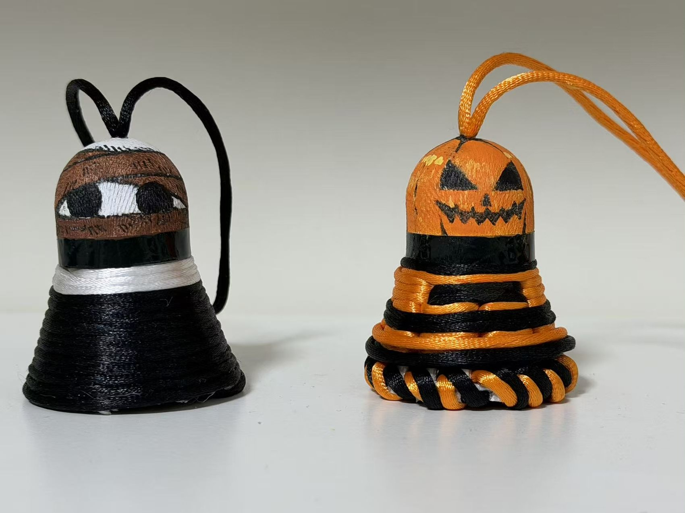
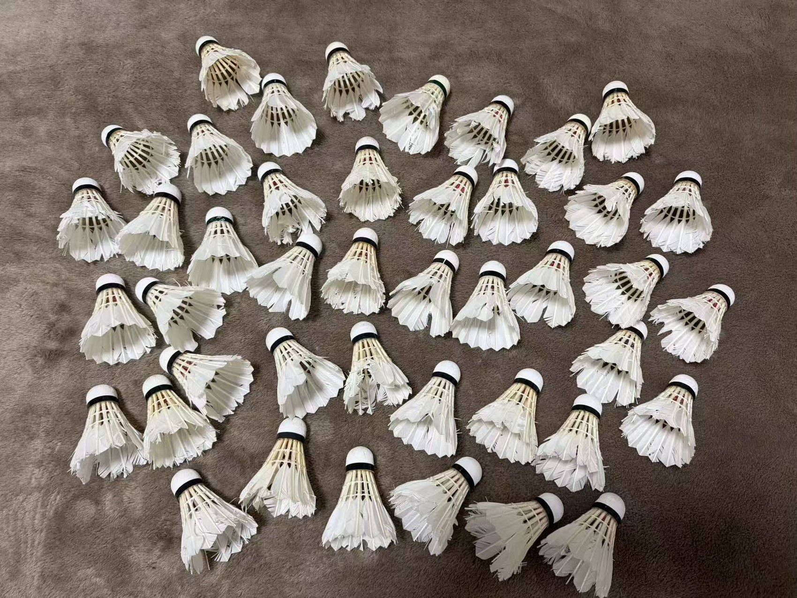
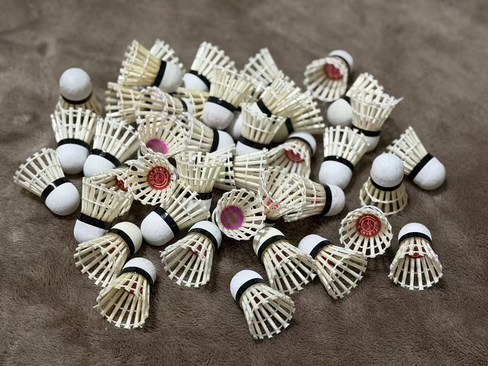
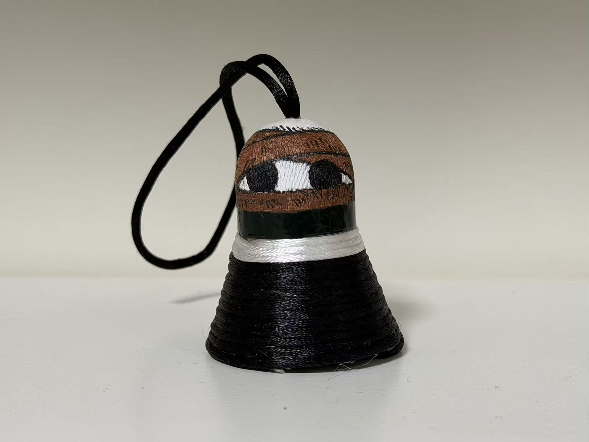
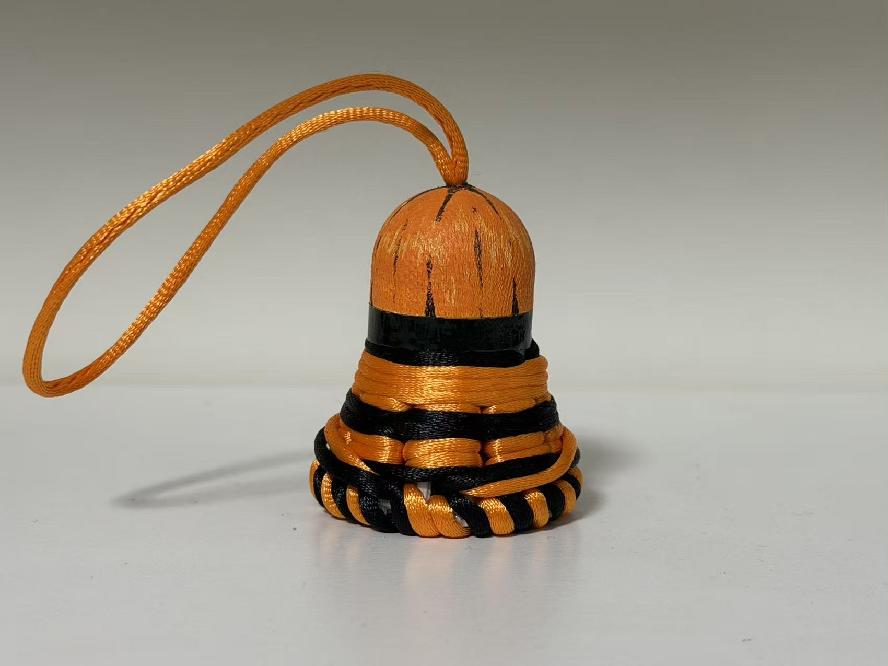
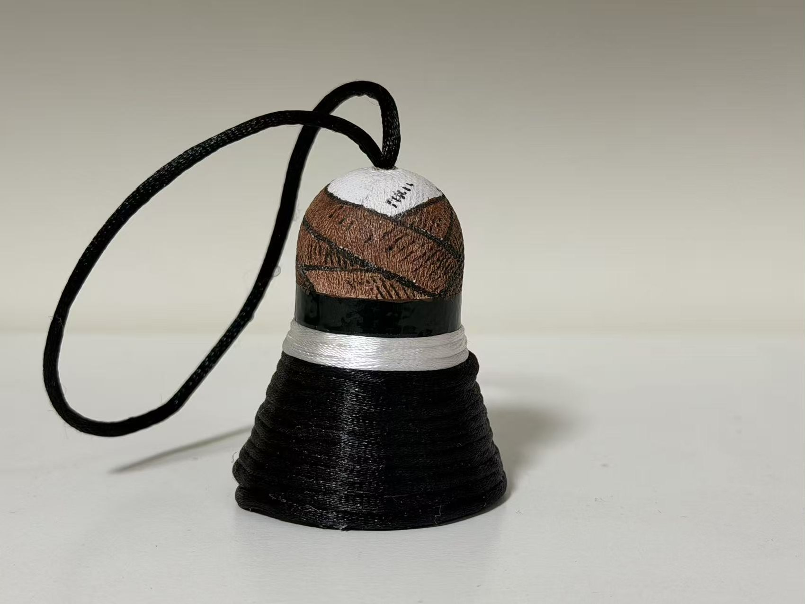

咧嘴一笑，南瓜登场
橙色铺出南瓜的底色，黑色画出三角眼睛和锯齿笑脸。橙黑相间的线绳层层缠绕，底部的一圈交叉纹理像精心编好的花边。

这个万圣节，我把打废的羽毛球变成了两位特别的小伙伴：一个画着南瓜笑脸，一个披上黑色外衣。旧材料，也能拥有古灵精怪的新模样。
把打废的羽毛球收集起来，清理并挑选可以继续使用的球头与球架。它们原本散落在球场边，如今将成为节日挂饰的起点。


保留羽毛球特有的小裙摆轮廓，再用彩线缠绕和手绘表情，做出一眼就能认出的万圣节气氛。
橙色与黑色交错缠绕，让两只挂饰拥有统一的主题；不同的线条和表情，又让它们各自保留小小的个性。

橙色铺出南瓜的底色，黑色画出三角眼睛和锯齿笑脸。橙黑相间的线绳层层缠绕，底部的一圈交叉纹理像精心编好的花边。

黑色线绳包覆球架，只在顶部留出一圈白色。圆圆的黑色眼睛和头顶的小表情，让这只暗夜小怪看起来有一点神秘，也有一点可爱。

